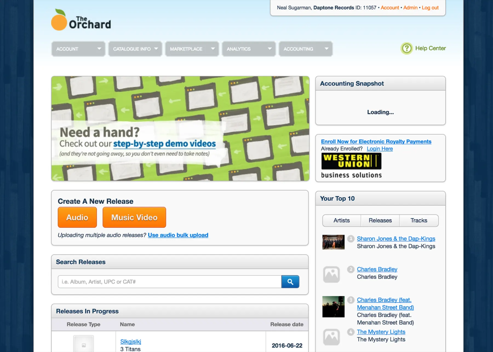
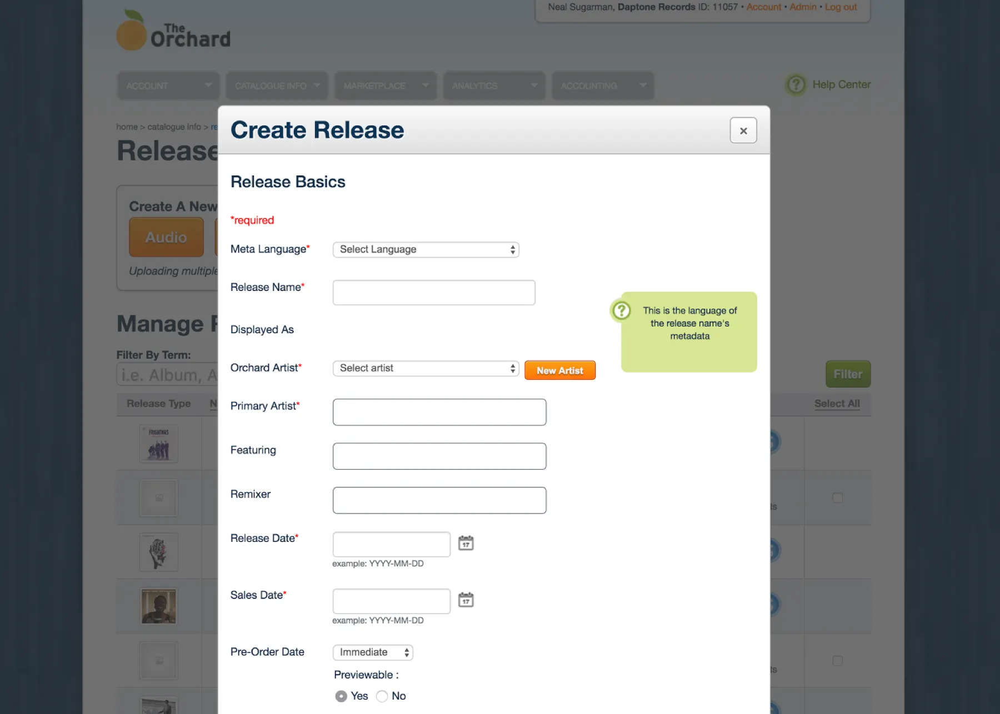
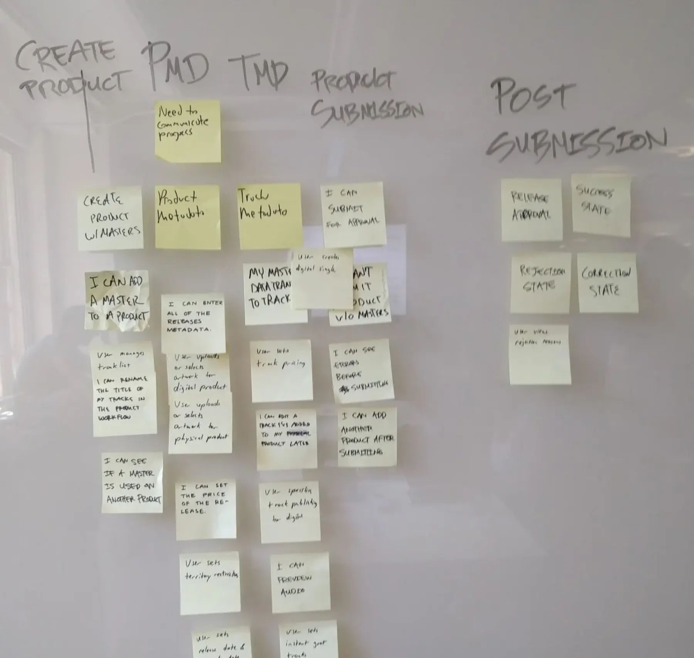
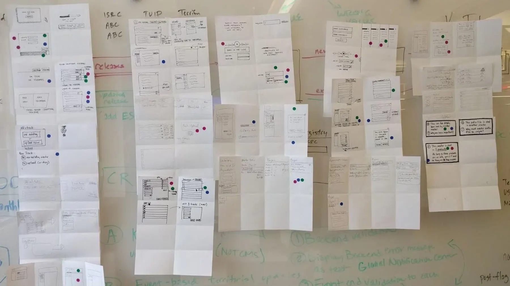
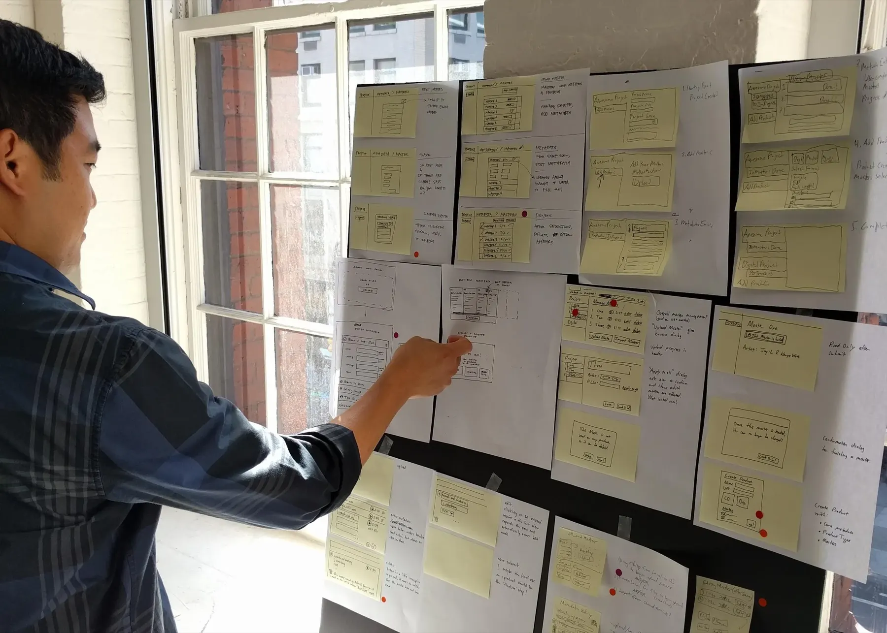
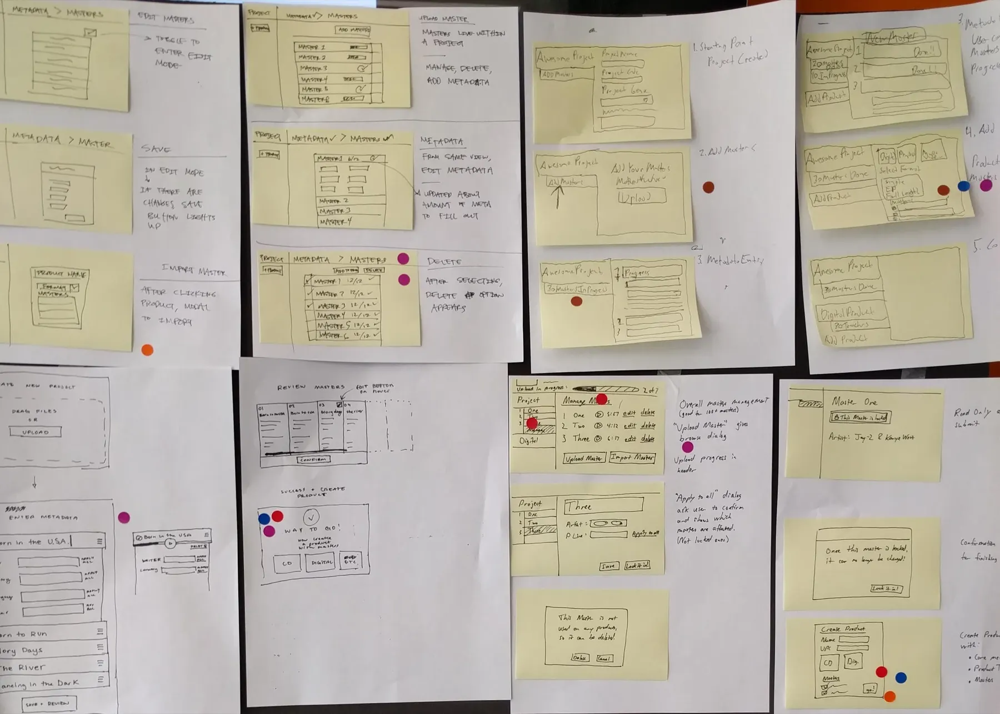
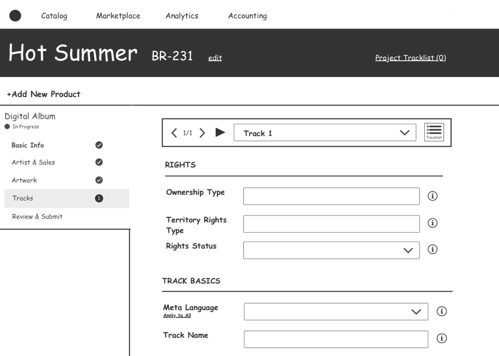
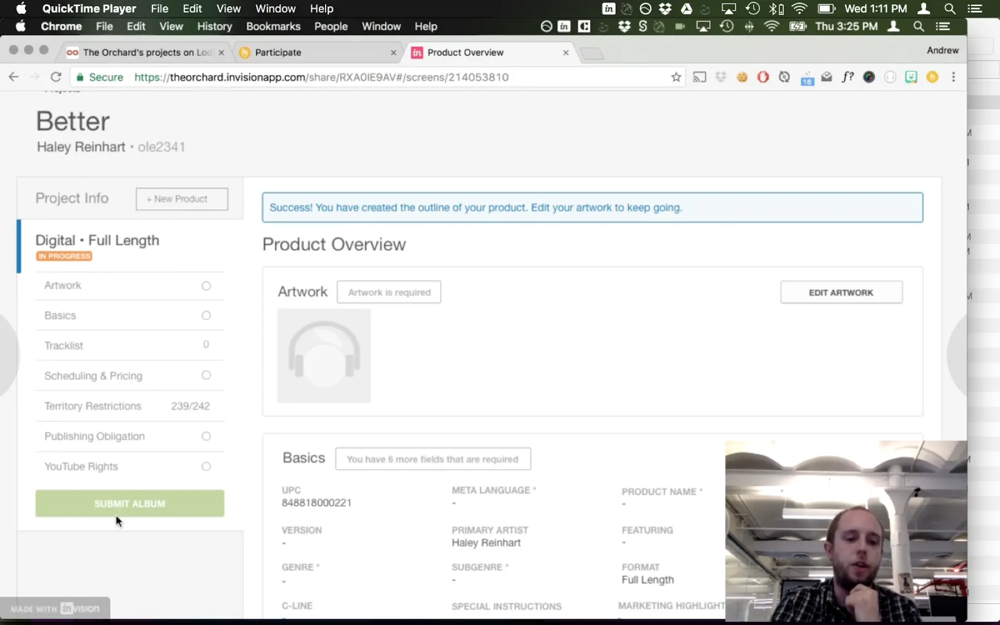
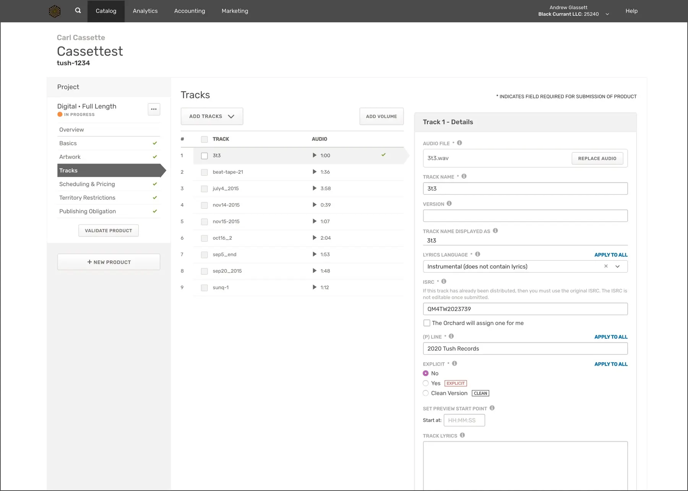
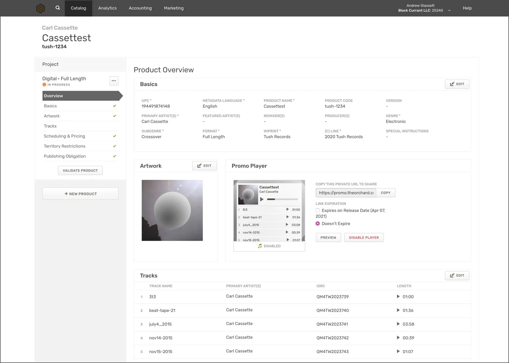

Background
The Orchard’s application suite, Workstation, was originally designed in 2006. It had become outdated both visually and in how it fit the industry.
78% of The Orchard’s revenue comes from audio content, and all of that content has to be entered through Workstation.

UX issues
The old experience was a long, precarious form in a modal. Users hated it. It was slow, often closed without saving, was hard to maintain, and was behind in style, language, and interaction.
After using the system for a month to release actual products of my own, I ran a series of workshops to kick off the redesign.

Workshops
Workshop 1: Critical user path
The team included a designer, a product manager, a technology director, and the VP of Product as decision maker. Having used the system in a real context made it much easier for me to advocate for user-centered choices.
We ran a card sort to define the critical user path for Release Builder.

Workshop 2: Crazy 8s
Next came quickfire exercises to get everyone thinking in terms of user experience, starting with Crazy 8s: eight quick sketches each, then a vote on the best ideas.

Workshop 3: End-to-end flow
Everyone sketched ideas for the entire flow, and again we voted on the best ones. The sprint let us make decisions as a team and align on one strategy.


Wireframes & stakeholder feedback
I quickly created wireframes and shared them with the sprint team and stakeholders. Keeping fidelity low made sure we got the right kind of feedback.
We uncovered serious gaps in requirements and fixed them before any in-depth design or development.

High fidelity & user testing
I created high-fidelity designs, prototyped the experience in InVision, and used Lookback.io to interview users and validate our ideas before development.
Testing surfaced a few problems, mostly with navigation.

Moving to development
I worked with product managers on a release plan for the new version.


Results
The initial response was overwhelmingly positive, which let us roll the redesign out to larger groups and keep gathering feedback.
A year later, a follow-up survey showed design and usability had improved, and that the bigger remaining issue was speed and performance. The company went on to invest heavily in architecture and load times.
| Learning | Metric | Before | After |
|---|---|---|---|
| Users need more tools for scheduling products | Customer satisfaction | 3.14 / 5 | 3.75 / 5 |
| The system was too slow | Speed & performance | 2.83 / 5 | 3.87 / 5 |
| Users wanted more feedback about errors | Form field error rate (Mouseflow) | 21% | 12% |